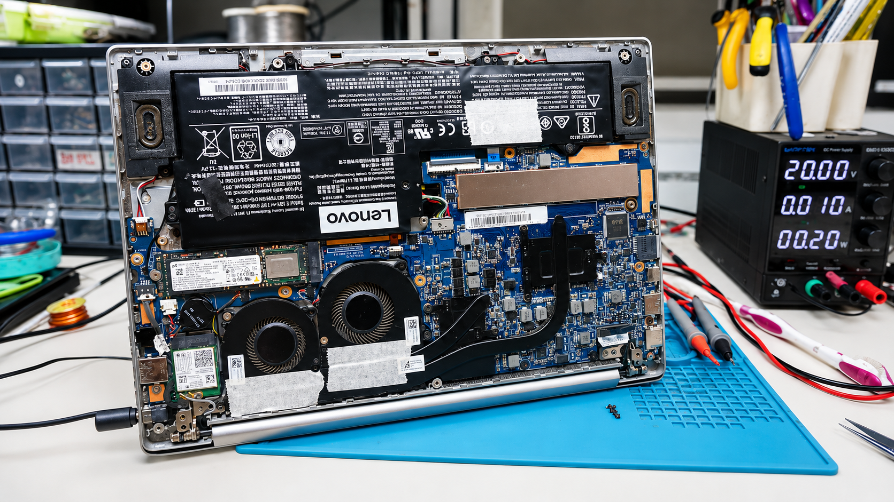
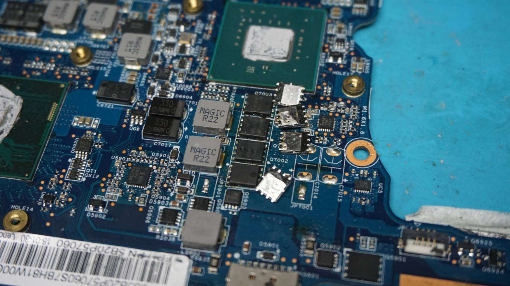

ซ่อม Lenovo Ideapad 320S อาการเปิดไม่ติด ช็อตภาคจ่ายไฟ GPU (เปลี่ยน MOSFET)
1. ตรวจเช็คแรกรับ & วัดไฟเมนบอร์ด (Before)
ลูกค้าส่งโน๊ตบุ๊ค Lenovo Ideapad 320S เข้ามาด้วยอาการเปิดไม่ติด กดเปิดเครื่องแล้วไม่มีไฟสถานะใดๆ ติดขึ้นมา เสียบสายชาร์จไฟก็ไม่เข้า ช่างจึงทำการแกะฝาหลังเพื่อรื้อฝาเครื่องและถอดแบตเตอรี่ออก จากนั้นทำการจ่ายไฟตรงด้วย DC Power Supply พบว่ามีกระแสไฟตัดการทำงานทันที (Short Circuit) แสดงว่ามีจุดช็อตบนเมนบอร์ด

2. ขั้นตอนการซ่อมบอร์ด เปลี่ยน MOSFET ภาคจ่ายไฟ (In Progress)
หลังจากการไล่วงจรไฟหลัก (Main Line) ด้วยเครื่องมือวัดไฟ พบว่าจุดที่ช็อตลงกราวคือ ภาคจ่ายไฟการ์ดจอ (GPU VCORE) โดยมีตัว MOSFET ชิปช็อตเสียหาย ส่งผลให้ไฟเลี้ยงระบบไม่สามารถกระจายไปเลี้ยงส่วนอื่นๆ ได้ ช่างได้ทำการเปลี่ยน MOSFET ที่ช็อตออก จากนั้นนำตัวใหม่ที่มีสเปกตรงตามไดอะแกรมวงจรเข้าเปลี่ยนแทนที่

3. ผลการซ่อมและการทดสอบระบบ (After)
หลังจากทำการเปลี่ยน MOSFET และประกอบเครื่องกลับ พร้อมกับเปลี่ยนซิลิโคนระบายความร้อนใหม่เรียบร้อยแล้ว เมื่อทดลองจ่ายไฟเข้าเครื่อง พบว่าแรงดันไฟกลับมาปกติที่ 20V (กระแสสแตนด์บายปกติ) เครื่องสามารถกดเปิดติด บูตเข้าสู่ Windows ได้สมบูรณ์ ช่างทำการ Stress Test ทดสอบโหลดการ์ดจอและความร้อนต่อเนื่องเป็นเวลา 2 ชั่วโมง ผ่านเกณฑ์เรียบร้อย พร้อมส่งมอบคืนลูกค้าครับ!

คำถามที่พบบ่อยเกี่ยวกับ Lenovo Ideapad 320S
คำถามที่ลูกค้าสอบถามบ่อยเกี่ยวกับอาการเปิดไม่ติดและการซ่อมเมนบอร์ด
โน๊ตบุ๊ค Lenovo หรือแบรนด์อื่นๆ เปิดไม่ติด ไฟไม่เข้า?
ตรวจเช็คอาการฟรี ประเมินราคาก่อนซ่อม ซ่อมบอร์ดระดับอุปกรณ์ ชิปเซ็ต ไม่ต้องยกเปลี่ยนบอร์ดแพงๆ